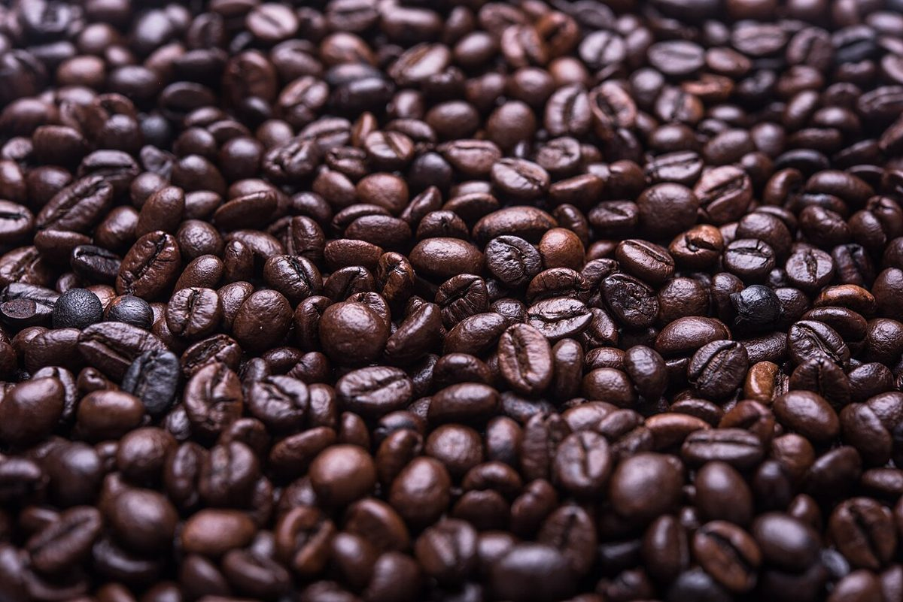

PART 02 前面カメラ
店のこと
お店について確認できているのは、所在地・電話番号・Instagramのアカウントです。
このページの「想像してみる」部分は、制作側が想像して書いたものです。お店の実際の様子・考え・商品とは関係がありません。
確認できていること
- 店名は「プチメゾン」、業種はパン(ベーカリー)
- 所在地は千葉県成田市美郷台1丁目7−10(〒286-0013)
- 電話番号は0476-37-6886
- Instagramは@petitemaison1983
- 営業時間・定休日・メニュー・価格・ご予約・駐車場は準備中

想像してみる
店名の響きから
由来は分かりません。制作側は「小さな家」を思わせる響きだと感じ、それを手がかりにこの配置図をつくりました(お店の実際の姿ではありません)。

